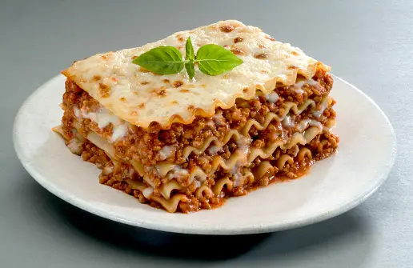

Home
How to make a Lasagna

Lasagna: A dish loved by everybody
Everyone loves a good lasagna, right?
It's a great way to feed a crowd and a
perfect dish to bring to a potluck. It freezes well.
It reheats well. Leftovers will keep you happy for days.
Simply Recipes reader Alton Hoover sent me his
favorite recipe for lasagna which he has been
cooking since his college days. Alton's original
recipe created enough lasagna for a small army so
I halved it. What is posted here will easily serve
eight people.
Get your ingredients
- Meat: This super meaty lasagna has sweet Italian sausage and lean ground beef.
- Onion and garlic: An onion and two cloves of garlic are cooked with the meat to add tons of flavor.
- Tomato products: You'll need a can of crushed tomatoes, two cans of tomato sauce, and two cans of tomato paste.
- Sugar: Two tablespoons of white sugar add subtle sweetness and enhance the flavor of the sauce.
- Spices and seasonings: This lasagna recipe is flavored with fresh parsley, dried basil leaves, salt, Italian seasoning, fennel seeds, and black pepper.
- Lasagna noodles: Use store-bought or homemade lasagna noodles.
- Cheeses: Parmesan, mozzarella, and ricotta cheese make this lasagna extra decadent.
- Egg:An egg helps bind the ricotta so it doesn't ooze out of the lasagna when you cut into it.
How to layer a lasagna
The detailed layering instructions can be found in the recipe below, but this is the order you'll follow:
- Meat sauce
- Noodles
- Ricotta mixture
- Mozzarella slices
- Mozzarella slices
- Parmesan cheese
- Repeat the layers, then top with the remaining Parmesan.
How to cook a lasagna
The assembled lasagna should take about 50 minutes to cook in
an oven preheated to 375 degrees F. Cover it with foil for the
first 25 minutes, then let it cook uncovered for the final 25 minutes.
Also, it's important to let the lasagna rest at room temperature
for about 15 minutes before you cut into it.